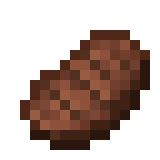
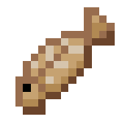

Nom
Icône
Faim restaurée
Saturation restaurée
Gateaux

6 parts de

2,4 (0.4 par part)
Comment en obtenir?
Ragout de lapin

5 parts de
12
Comment en obtenir?
Cotelette de porc cuite

4 parts de
12,8
Comment en obtenir?
Steak

4 parts de
12,8
Comment en obtenir?
Tarte a la citrouille

4 parts de
4.8
Comment en obtenir?
Carotte dorée

3 parts de
14,4
Comment en obtenir?
Fiole de miel

3 parts de
1.2
Comment en obtenir?
Mouton cuit

3 parts de
9.6
Comment en obtenir?
morue cuite

3 parts de
9,6
Comment en obtenir?
Comment en obtenir?